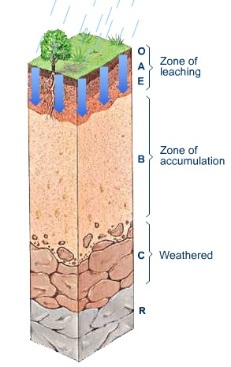

Soil Horizons

Image provided by Penn State College of Agricultural Sciences
- O: surface horizon made of made Organic Matter
- A: surface horizon, mineral soil high in Organic Matter
- E: subsurface horizon, Leached, light in color, site of eluviation processes
- B: subsurface horizon, site of accumulations, site of illuviation processes
- C: substratum, least weathered horizon, unconsolidated parent material
- R: bedrock
Test your knowledge! Download these soil orders to see if you can tell what their horizons are!
Downloads provided by Natural Resources Conservation Service Soils